MPLS Learning
主要记录MPLS的学习
MPLS简述
MPLS发展简史
- Internet的发展与挑战
采用最长匹配算法、逐跳转发方式的路由器日益成为限制网络转发性能的一大瓶颈，快速路由技术成为当时研究的一个热点。ATM技术因为采用定长标签，并且只需要、维护比路由表小的多的标签表，可以提供更高的转发性能。最后有人尝试将ATM和IP技术的优势结合起来，为此各个厂商提出了各自的标签交换解决方法。 - 各类标签交换方法
- IP Switching
- Tag Switching
- ARIS
- MPLS
-
MPLS现在与未来
MPLS用短而定长的标签来封装网络层分组。MPLS从各种链路层得到链路层服务，又为网络层提供面向连接的服务。MPLS能从IP路由协议和控制协议中得到支持，同时，还支持基于策略的约束路由。它路由功能强大、灵活，可以满足各种新应用对网络的要求。MPLS技术起源于IPv4,但其核心技术可以扩展到多种网络协议。随着硬件技术的进步，采用ASIC和NP进行转发的高速路由器和三层交换机得到广泛应用，MPLS提高转发速度的初衷没有了意义。但是MPLS支持多层标签和面向连线将额特点，使得其在VPN、流量工程、Qos等方面得到广泛应用。 -
MPLS VPN技术
MPLS VPN是一种基于MPLS技术的VPN，是在路由和交换设备上应用MPLS技术实现的虚拟专用网络，可灵活满足多种业务需求;可以用在解决企业互连，政府相同/不同部门的互连，也可以用来提供各种新业务，如为IP电话业务专门开辟一个VPN以解决IP网络地址不足和QoS的问题，或者用MPLS VPN为IPv6提供开展业务的可能。
BGP/MPLS VPN模型中，网络由运营商的骨干网与用户的各个Site组成，所谓VPN就是对site集合的划分，一个VPN对应一个由若干site组成的集合。基于BGP扩展实现的L3 MPLS VPN所包含的基本组件：- 骨干网络边缘路由器(Provider Edge Router,PE)：存储VRF，处理VPN-IPv4路由，是MPLS三层VPN的主要实现者。
- 用户网边缘路由器(Custom Edge Router,CE)：发布用户网络路由。
- 骨干核心路由器(Provider Router)：负责MPLS转发。
- VPN用户站点(site)：是VPN种的一个孤立的IP网络，各site之间通过运营商骨干网实现连通。
BGP扩展实现的MPLS/VPN扩展了BGP NLRI种的IPv4地址，在其前面增加了一个8字节的RD(Route Distinguisher)。RD用来区分不同VPN的IPv4地址。VPN的成员关系是通过VPN-IPv4路由所携带的Route Target属性来获得的，每个VRF配置了一些策略，规定一个VRF可以接收携带何种Route Target的路由信息，向外发布路由时携带什么Route Target属性，每个PE根据这些策略，确定接收到的哪些路由可以引入某个VRF中，并进行路由计算生成VRF相关的路由表。
PE-CE之间要交换路由信息，可以通过静态路由，也可以通过RIP、OSPF、BGP、ISIS等动态路由协议。PE-CE之间采用静态路由的好处是可以减少CE设备可能因为管理不善等原因，造成对骨干网BGP路由产生震荡，影响骨干网的稳定性。
MPLS/BGP VPN提供赛额灵活的地址管理。由于采用了单独的路由表，允许每个VPN使用单独的地址空间，称为VPN-IPv4地址空间，RD加上IPv4地址就构成了VPN-IPv4地址。
MPLS/BGP VPN中属于同一个的VPN的两个site之间转发报文使用两层标签来解决，在入口PE上为报文打上两层标签：第一层(外层)标签在骨干网内部进行交换，代表了从PE到对端PE的一条隧道，VPN报文打上这层标签就可以沿着LSP到达对端PE;第二层(内层)标签，指示了报文应该到达哪个site，或者更具体一些到达哪一个CE。这样报文到达PE时剥掉了外层标签，这时根据内层标签就可以找到转发的接口。 MPLS L2VPN提供基于MPLS网络的二层VPN服务。使用基于MPLS的L2VPN解决方案，运营商可以在统一的MPLS基础网络架构上，提供基于不同媒介的二层VPN服务。同时这个MPLS网络仍然可以提供通常的IP、三层VPN、流量工程和QoS等其他服务，极大地节省网络建设的投资。
-
MPLS及LDP协议基础
- MPLS基础
- MPLS的产生与现状
MPLS概念的最初提出是为了提高转发效率。因为当时IP转发大多靠软件进行，在转发的每一跳都要进行至少一次最长匹配查找，操作复杂导致转发速度比较慢。有些厂商借鉴ATM的转发方式来简化IP转发过程，由此产生了一种结合IP和ATM的优势于一身的新技术–MPLS。在当时的条件下这可以说是一个很大的创举，其优势也是显而易见的，但后来IP转发领域有很多新技术产生，如硬件转发与网络处理器的出现，导致MPLS的速度优势体现不出来，纯MPLS转发在实际应用中几乎没有用武之地。
但MPLS是一个很有"潜力"的技术，可灵活扩展。很多新的应用依靠纯IP转发实现起来有很大的难度，但用MPLS再结合其它技术就可以实现，如：BGP/MPLS VPN、流量工程等技术就是对MPLS灵活扩展的结果。当前，MPLS越来越受重视，成为当今网络技术的热点，还有一些新的应用需求也正在利用MPLS来实现。 - MPLS相关概念
- Label(标签)
在帧模式链路上，Label位于二层头与IP报文之间，一个Label头的结构如下：
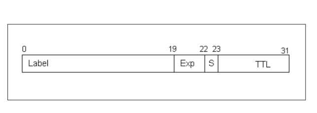
Label:标签值，长度20bit，是标签转发表的关键索引
Exp：用于QoS，长度为3bit，作用与Ethernet802.1p值相似
S：栈底标志，长度1bit，如果有多个Label时，在栈底的Label的S位之"1”，其它为"0”，只有一个Label时S位置"1”。
TTL:存活时间，8bit，与IP报文中的TTL值相似，这个值从IP报文头的TTL域拷贝过来，每进行一次Label交换时，外层Label的TTL值就减"1”。 - LSR(Label Switching Router)
具有标记分发能力和标记交换能力的路由器。 - LER(Label Edge Router)
标记边缘路由器，处在MPLS网络的边缘，负责将进入MPLS网络的报文或帧对应到具体的FEC并打上Label，变成MPLS帧转发；将离开MPLS网络的帧去掉Label还原成原来的报文或帧再查找相应的转发表转发。 - FEC(Forwarding Equivalence Class)
LSR认为具有相同转发处理方式的报文，使用同一个标签来标记这些报文。如：匹配相同目的IP前缀的多个IP报文可属于一个FEC，由于这些报文在做IP转发时是相同的转发处理方式及路径，所以标记这些报文的时候用同一个标签。 - PUSH(加标签)
在第一跳Ingress LER上在报文的二层头和三层头之间插入Label，或者中间LSR在MPLS报文的标签栈顶增加新的Label。 - POP(弹出标签)
在最后一跳Egress LER上将报文中的Label全部去掉，还原成IP报文，或者中间LSR去掉栈顶标签减少标签栈层次。 - SWAP(交换标签)
在转发的过程中根据标签转发表中的LSP替换报文中栈顶Label的过程。 - LSP(Label Switched Path)
标签转发路径，也就是转发MPLS报文的路径。
- Label(标签)
- MPLS转发方式
MPLS技术综合了第二层交换和第三层路由的功能，将第二层的快速交换和第三层的路由有机地结合起来。MPLS网络边缘的LER主要完成以下工作：三层路由、分析IP包头用于决定对应的FEC和标签交换路径，进而标记报文。而在MPLS网络核心的LSR采用基于标签的第二层交换，工作相对较简单。从这里就可以看出MPLS的好处，虽然处在MPLS网络边缘的LER工作较复杂，但处在核心的LSR只需要像FR或ATM交换机那样执行二层交换就可以了，根本不需要最长匹配和多次查找。
典型的MPLS转发过程如下:- 所有LSR启用传统路由协议，在LSR中建立IP路由表
- 由LDP结合IP路由表来建立LSP
- Ingress LER接收IP包，分析IP包头并对应到FEC，然后给IP包加上标记，根据标签转发表中的LSP将已标记的报文送到相应的出接口
- LSR收到带有标记的报文，将只分析标记头，不关注标记头之上的部分，根据Label头查找LSP，替换Label，送到相应的出接口
- 倒数第二跳LSR收到带有标记的报文，查找标记转发表，发现对应的出口标签为隐式空标签或显示空标签，弹出标签，发送IP报文到最后一跳LSR
- 在最后一跳Egress LER上执行三层路由功能，根据报文的目的IP地址转发
- MPLS的产生与现状
- LDP协议基础
LDP协议在[RFC 3036]中详细定义，LDP的协议报文除Hello报文基于UDP外，其它报文都是在TCP之上，端口号为646。当发生传输丢包时，能够利用TCP协议提供错误指示，实现快速响应和恢复。与BGP相似，这种基于TCP的可靠连接使得协议状态机为简单。- 报文格式
- LDP PDU头部
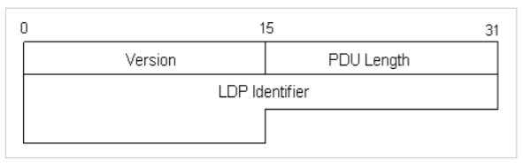
版本号：16bit，目前LDP只有一个版本，版本号始终为1； PDU长度：16bit，值为LDP PDU头部以后的数据部分的长度，不包括LDP PDU头部； LDP Id：长度为48bit，前32bit为LSR-ID，后16bit为标记空间标志，全局空间为"0”,局部接口空间为"1”。如：收到的LDP PDU中的LDP-ID为192.168.1.2：0，表示对方的LSR-ID为192.168.1.2，标签控件为全局空间。 - LDP 消息格式
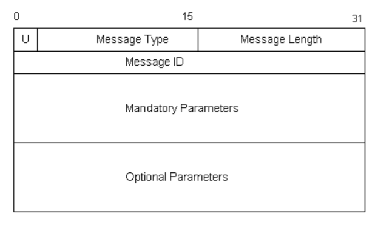
U:这一位总是为"0”，代表可识别的消息，为"1"代表不可识别的消息 Message Type：协议根据这个域识别不同的消息； Message Length：指出长度域之后的数据部分的长度； Message ID：用来唯一地标识这个消息，如果消息为Notification，则ID与导致产生Notification的消息ID相关联。
- LDP PDU头部
- 消息种类
- 邻居发现消息：在启用LDP协议的接口上周期性发送该消息
Hello消息、Initialization消息、KeepAlive消息 - 标签分发消息：用来请求、通告及撤销标签绑定
Address message、Address Withdraw message、Label request message、Label mapping message、Label withdraw message、Label release message、Label abort request message。 - 错误通知消息：用来提示LDP对等体在会话过程中的重要事件
Notification消息
- 邻居发现消息：在启用LDP协议的接口上周期性发送该消息
- LDP相关概念
- 标签空间
可分为全局标签空间和接口标签空间，全局标签空间表示LSR为特定目的地的FEC产生唯一的Label，接口标签空间表示LSR在每个接口上为特定目的地的FEC产生唯一的Label。在帧模式的链路上为全局标签控件，在信元模式的链路上为接口标签控件。LDP报文中的LDP-ID域中指示出标签空间值。 - 上游和下游LSR
- 倒数第二跳弹出
在实际应用当中，对于Egress LSR在弹出最外层Label后还需要进行其它较复杂的三层工作。而事实上最外层标签的作用在MPLS VPN的应用中只是为了将报文送到Egress LSR。因此，在倒数第二跳LSR已知报文下一跳的情况下，可以将最外层的标签弹出后转发到最后一跳LER，而不必进行标签替换。这样使得最后一跳LSR的工作相对简单了一些。因此在[RFC3032]中规定，最后一跳LSR发给倒数第二跳LSR的标签为隐式空标签"3”。因此，收到标签"3"的上游LSR就知道自己是该FEC的倒数第二跳，就知道自己在用该LSP转发Label报文时，应执行倒数第二跳弹出。
- 标签空间
- 标签分发方式
- DU(Downstream Unsolicited)
下游LSR如果工作在DU方式(下游主动分发)下将根据某一触发策略向上游LDP邻居主动分发标签。下图中LSR-C标签分发触发策略是为直连32位掩码的路由分配标签，因此LSR-C通过Label mapping message向上游LDP邻居主动通告自己的直连路由172.16.1.1/32的标签。
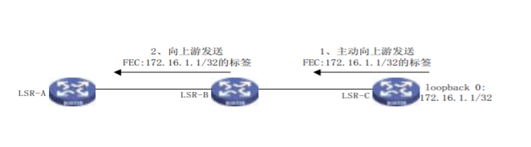 - DOD(Downstream On Demand)
下游LSR如果工作在DOD方式(下游按需分发)下，只有在接收到上游LDP邻居的Label request message后才回应Label mapping message分发标签。下图中LSR-C工作在DOD模式下，LSR-A的触发策略生效(LSR-A转发172.16.1.0/24的报文流量达到设定阈值）后将向172.16.1.0/24的下游发送标记请求消息(Label request message)。最终LSR-C收到请求，发送Label mapping message响应。
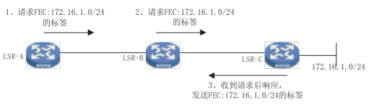
- DU(Downstream Unsolicited)
- 标签控制方式
- 独立控制方式(Independent)
LSR如果工作在独立控制方式下，如果标签分发方式是DU，即使在没有获得下游标签的情况下也会直接向上游分发标签。在标签控制的方式上显得很"独立”,不依赖下游LSR；如果标签分发方式是DOD，发送标签请求的LSR的直连下游LSR会直接回应标签，而不必等待来自最终下游的标签。
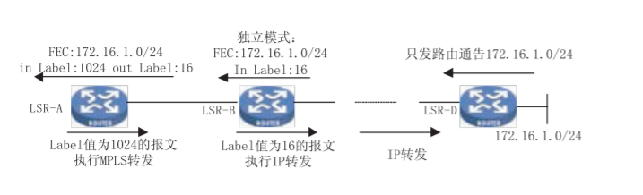
上图中，在LSR-B上采用独立控制方式。LSR-B路由表中有172.16.1.0/24的路由，但没有收到下游来的标签绑定。由于LSR-B工作于独立控制方式，所以对路由表中的所有路由都向上游发送标签。继而，无论LSR-A工作在独立模式还是有序模式，将向上游继续发送标签。这是，如果有目的IP为172.16.1.0/24的报文进入LSR-A，它将采用MPLS转发。但数据收到LSR-B后，由于没有关联172.16.1.0/24的LSP，所以采用传统IP转发。 - 有序控制方式(Ordered)
LSR如果工作在有序控制方式下，如果标签分布模式为DU，则只有收到下游LSR分布的标签时才会向自己的上游LSR通告标签，如果没有收到下游的标签映射则不向上游LSR通告。VRP系统缺省工作在有序方式。
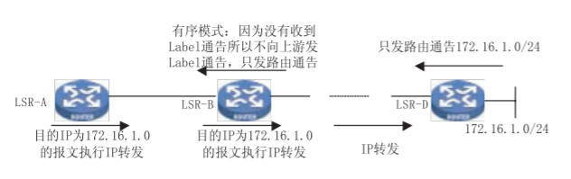
上图中，LSR-B路由表中有172.16.1.0/24的路由，但由于LSR-B没有收到下游的标签且工作在有序模式，因而不向上游通告关于172.16.1.0/24的Label。如果LSR-A收到目的IP为172.16.1.0/24的保温将采用传统IP转发。可以看出，在有序控制方式下，是否向上游LSR分发标签取决于自己是否收到下游LSR的标签。
- 独立控制方式(Independent)
- 标签保留方式
- 自由保留模式(Liberal retention mode)
收到无效的Label通告后(没有对应的IP路由或路由通告与Label通告的下一跳不一致),虽然不生成LSP，但在标签绑定表里存储，并且LSR向上游通告其它FEC的Label绑定时也不占用这些标签，这种方式的有点是LSR应对网络拓扑变化的响应快，缺点是浪费标签，所有不能生成LSP的Label通告都需要保留。
！LDP-Liberal-retention-mode
在上图中LSR-A工作于自由保留方式，对于FEC为172.16.1.0/24将生成下一跳为LSR-B的LSP，LSR-C发来的Label通告将保留。如LSR-A和LSR-B之间的直连链路down掉，对于FEC：172.16.1.0/24的将很快生成下一跳为LSR-C的LSP。 - 保守保留模式(Conservation retention mode)
工作于保守保留模式的LSR收到无效的Label通告后将不存放到标签绑定表里，在向上游通告Label时可以自由使用这些标签。保守保留模式的缺点是对拓扑变化的响应较慢，优点是节省标签。
- 自由保留模式(Liberal retention mode)
- 会话建立及状态机
- LDP会话建立过程
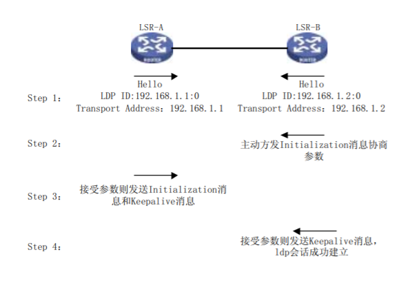 - 状态机描述
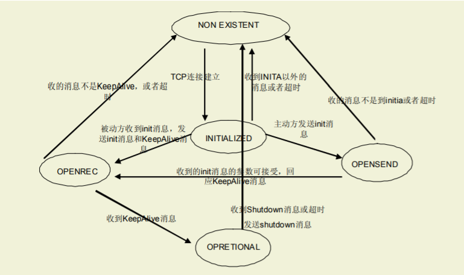
- LDP会话建立过程
- 报文格式
{kind=link}
MPLS LSP ping_traceroute
MPLS L3VPN基础
- VPN技术概述
- VPN技术的定义
多个站点之间的客户通过部署在相同的基础设施之上进行互联，它们之间的访问及安全策略与专用网络相同。通俗点说就是使用公共网络设施实现私有网络的连接，各私有连接在公共网络上对其它的私有网络是不可见的。相对于专线的物理隔离技术来说，VPN技术更多意义上是一种逻辑隔离技术。它主要是在客户要求各个站点通过服务提供商公共网络进行连接的需求背景下，由专线网络的概念引申而来的。
任何符合如下两个条件的网络我们都可以泛泛地称为VPN网络：- 使用共享的公共环境实现各个私有网络的连接；
- 不同的私有网络间(除非有特殊要求，如两个公司间的互访要求)是相互不可见的。
- VPN技术的分类
VPN技术主要从四个方面进行分类：- VPN要解决的业务问题；
- 服务提供商在哪一层与客户交换拓扑信息；
- 在服务提供商中用于实现VPN服务的第二层或第三层技术；
- 网络的拓扑结构
- VPN的模型及典型实现技术
如上图所示，构成一个VPN网络的关键组件包括CE、PE、P，任何一个VPN网络都是由这几个组件全部或部分组成的，VPN的主要模型为两种，分别是：- Overlay VPN(覆盖VPN模型)
Overlay VPN的主要特点是客户的路由协议总是在客户设备之间交换，而服务提供商对客户网络的内部结构一无所知。典型的技术有第二层隧道技术(X.25、帧中继、ATM)和第三层隧道技术(IP-over-IP)。主要缺陷是连接性比较复杂时管理开销非常大；要正确提供VC的容量，必须了解站点间的流量情况，比较难统计。 - Peer-to-Peer VPN(一对等VPN模型)
主要特点是服务提供商的PE设备直接参与CE设备的路由交换。该VPN模型的实现依据是：如果去往某一特定网络的路由未被安装在路由器的转发表中，在那台路由器上，该网络不可达。实施Peer-to-Peer VPN的前提是所有CE端的地址是全局唯一的。
这样为了结合这两类VPN的优点而提出了MPLS L3 VPN技术。
- Overlay VPN(覆盖VPN模型)
- VPN技术的定义
- MPLS L3 VPN技术综述
-
MPLS VPN技术产生背景
现有VPN的一些固有的缺陷导致客户组网的很多需求不能满足，实施比较复杂。MPLS VPN技术将两种VPN模型完美的整合到一起，推动了VPN的继续发展。 -
MPLS L3 VPN体系结构综述
MPLS L3 VPN技术解决的最重要的问题是地址重叠问题。必须有一种技术可以保证不同的用户VPN可以使用相同的私有地址空间，而且可以在公共的骨干网络上互相不影响地交换数据。要解决地址空间重叠的问题主要有以下几个问题：- 本地路由冲突问题，即：在同一台PE上如何区分不同VPN的相同路由。
- 路由在网络中的传播问题，两条相同的路由，都在网络中传播，对于接收者如何分辨。
- 报文的转发问题，即使成功的解决了路由表的冲突，但是当PE接收到一个IP报文时，它又如何能够知道该发给哪个VPN？因为IP报文头中唯一可用的信息就是目的地址。而很多VPN中都可能存在这个地址。
利用BGP的扩展，对应的解决思路如下：
- 本地路由冲突问题，可以通过在同一台路由器上创建不同的路由表解决，而不同的接口可以分属不同的路由表中，这就相当于将一台共享PE模拟成多台专用PE。
- 本地路由冲突问题的解决思路主要是从专用PE对等VPN模型上借鉴过来的。专用路由器方式分工明确，每个PE只保留自己VPN的路由。P只保留公网路由。而现在的思路是：将这些所有设备的功能整合在一台PE上完成。
- 具体操作是在PE设备上划分不同的VRF(VPN Routing&Forwarding Instance),每一个VRF可以看作虚拟的路由器，好像是一台专用的PE设备，该虚拟路由器包括如下元素：一个独立的路由表、一组归属于这个VRF的接口的集合，特定的VRF通过数据包从哪个接口接收来进行判断、一组只用于本VRF的路由协议。
- 对于每个PE，可以维护一个或多个VRF，同时维护一个公网的路由表(全局路由表),多个VRF实例相互分离独立。
- 实现VRF本地路由区分并不困难，但是解决远端路由区分就要在PE上使用特定的策略规则来协调各VRF和全局路由表之间的关系。这个主要是指PE设备如何分辨收到的路由是属于VPN的路由还是公共网络上的全局路由。解决的办法是给VPN路由加上一个特定的标记，由不同的标记来标示不同的路由，并由PE设备根据这个标记来判断该路由应该被写入哪个VRF中。
- 通过扩展的团体属性(RT)来解决，这样PE设备就可以通过在特定路由条目中加入RT属性来区分不同VRF的路由。具体的格式如下：
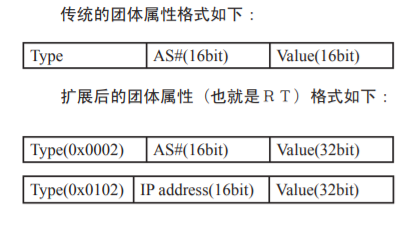
扩展的community有如下两种格式：其中type字段为0x0002或者0x0102时表示RT。RT是作为BGP路由的属性进行传递的，并且它是可选传递的属性。扩展的团体属性值是32bit的，可以提供更多的路由区分。 - RT的本质是每个VRF表达自己的路由取舍及喜好的方式。可以分为两部分:Export Target与Import Target；前者表示了我发出的路由的属性，而后者表示了我对哪些路由感兴趣。同时，RT的应用是比较灵活的，每个RT Export Target与Import Target都可以配置多个属性，例如：我对红色或者蓝色的路由都感兴趣。接收时是"或"操作，红色的、蓝色的以及同时具备两种颜色的路由都会被接受。这样就可以实现非常灵活的VPN访问控制。如下例：
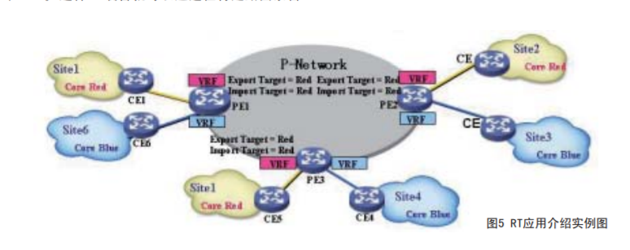
如图，每个红色公司的站点与PE路由器上的红色VRF关联。PE为每个红色VRF配置一个全局唯一的RT(RED)，作为其输入输出目标。该RT不会再分配给其它任何VRF作为它们的RT，这样就保证红色公司的VPN中只包含自己VPN中的路由。这样，SITE-1、2、5中就只有自己和对方的路由，两者实现了互访。同理SITE-3、4、6之间也一样。这时我们就可以吧SITE-1、2、5称为VPN-A，而把SITE-3、4、6称为VPN-B。
方式类型 发出路由 接受路由 专用PE方式 在属于特定VPN的路由器上，使用BGP的community属性，将本VPN的路由打上特殊标记。并将路由发给P路由器 在P路由器上接收所有的路由，并根据路由中的community属性发给特定的VPN的PE设备 VRF方式 在一个VRF中，在发布路由时使用RT的export规则。直接发送给其他的PE设备。 在接收端的PE上，接收所有的路由，并根据每个VRF配置的RT的import规则进行检查，如果与路由中的RT属性match，则将该路由加入到相应的VRF中 - 可以在路由传递的过程中为这条路由再添加一个标识，用以区别不同的VPN。
- 解决路由在网络中传递时的冲突问题，标准的BGP只能处理IPv4路由，所以如果不同的VPN使用相同的IPv4地址前缀，在接收端就无法分辨不同VPN的路由。使用RT属性是可以部分解决这个问题的，但同时也存在一定的局限性。
- 当PE收到不同VPN发过来的路由后，根据RT属性决定路由进入哪个VRF，这样就可以保证不同VPN的路由不具备可比性，操作可以正常进行。
- 路由撤销的时候BGP报文是不带属性的，RT肯定也就不起作用了，会导致所有VPN中的相同路由都被撤销掉。
- 所以RT虽然具备了这个功能但并不是所有的时候都好用，必须有一种标记可以和IPv4地址绑定到一起来从根本上解决这个问题–这个标记我们称为RD。
- RD是附加在IPv4地址前面的一种标记，它的格式如下：

其中类型字段定义了两个值：0和1，对于类型0，管理器子区域包括2字节、分配数值字段包括4字节。管理器子区域使用自治系统号码(ASN),分配数值子区域为服务提供商管理的数值空间。类型0不能使用私有自治系统号码，可能会造成冲突。如果要使用私有的自治系统，可以使用类型1。对于类型1，管理器子区域包括4字节，分配数值字段包括2字节。管理器子区域使用IPv4地址，分配数值子区域为服务提供商管理的数值空间。 - RD的结构和RT相似，但它们有本质区别，RT是BGP路由的扩展属性，而RD是附加在IPv4地址前的作为地址的一部分存在，这点需要大家注意。
- 在IPv4地址加上RD之后，就变成VPN-IPv4地址族了。理论上可以为每个VRF配置一个RD，但要保证这个RD全球唯一。通常建议为每个VPN都配置相同的RD。VPN-IPv4地址仅用于服务供应商网络内部。在PE发布路由时添加，在PE发布路由时添加，在PE接收路由后放在本地路由表中，用来与后来接收到的路由进行比较。CE不知道使用的是VPN-IPv4地址。在其穿越供应商骨干时，在VPN数据流量的包头中没有携带VPN-IPv4地址。RD只在骨干网络由协议交换路由时使用。并且PE从CE接收的标准路由是IPv4路由，如果需要发布给其它的PE路由器，此时需要为这条路由附加一个RD。正因为RD具有这些特点，所以如果两个VRF中存在相同的地址，但是RD不同，则两个VRF一定不能互访，间接互访也不行。这是因为数据转发时数据报文并不携带RD，这样数据到达目的地时PE就会在不同的VRF中查找到去往相同目的地的路由条目，从而造成错误的转发。虽然RD是在PE设备路由交换的过程中携带，但是RD并不会影响不同VRF之间的路由选择以及VPN的形成，这些事情是由RT搞定的。
- 解决路由在网络中传递时的冲突问题，标准的BGP只能处理IPv4路由，所以如果不同的VPN使用相同的IPv4地址前缀，在接收端就无法分辨不同VPN的路由。使用RT属性是可以部分解决这个问题的，但同时也存在一定的局限性。
- 由于IP报文的格式不可更改，但可以在IP头之外加上一些信息，由始发的VPN打上标记，这样PE在接受报文时可以根据这个标记进行转发。
- 数据转发时如果接收端PE的两个本地VRF中同时存在10.0.0.0/24的路由，当它接收到一个目的地址为10.0.0.1的报文时，它如何知道该把这个报文发给与哪个VRF相连的CE？肯定还需要在被转发的报文中增加一些信息。当然这个信息可以由RD担当，只需改造一下MPLS VPN的处理流程，使数据转发时也携带RD即可解决。但是RD一共64个bit，太大了，这会导致转发效率的降低。为保证效率，只需要一个短小、定长的标记即可。由于公网的隧道已经由MPLS来提供，而且MPLS支持多层标签的嵌套，这个标记可以定义成MPLS标签的格式。这个标签分配由谁来分配呢？路由是私网VPN的，LDP对其一无所知，这个分配VPN私网路由标签的任务也只能由扩展的BGP来完成了。
- 和LDP协议类似，标签的分配是在数据转发发生之前完成的。不同的是MP-IBGP分配标签是和路由交换同时进行的。我们知道BGP交换路由是通过NLRI来完成的，通过对BGP协议的改造，改造后的MP-IBGP进行NLRI信息交换时会附加RD、标签等各种信息。
-
- MPLS L3 VPN路由交换及数据转发流程
- MPLS L3 VPN技术综述
- MPLS L3 VPN路由交换过程
MPLS L3 VPN的路由交换时，PE路由器运行单个路由协议(MP-IBGP)来交换所有的VPN路由。为支持VPN客户空间重叠的情况，给VPN地址加上了RD，使其是唯一的。并使用RT属性来标示路由所属的VRF。MPLS/VPN的路由交换过程主要分为四个部分： - CE与PE之间的路由交换；
在PE上为不同的VPN站点配置VRF。PE上维护多个独立的路由表，包括公网和私网(VRF)路由表，其中公网路由表：包含全部PE和P路由器之间的路由，由骨干网IGP产生、私网路由表：包含本VPN用户可达信息的路由和转发表。
PE和CE之间通过标准的EBGP、OSPF、RIP或者静态路由交换路由信息。在这个过程中，除PE设备需要将CE设备传来的路由分别存储在不同的VRF外(这只和路由接收的接口有关，和其它MPLS VPN特性无关)其它操作和普通的路由交换没有区别。 - VRF路由注入到MP-IBGP的过程；
在从CE端接收到路由信息后，PE路由器需要对该路由加上RD(RD为手工配置),使其变为VPN-IPv4路由。然后在路由通告中更改下一跳属性为自己(通常是自己的loopback地址),为这条路由加上私网标签()、加上RT属性(RT属性手工配置)。这一系列工作完成后，由PE发给其它所有的PE邻居。其它的PE邻居也进行同样的操作用于交换不同CE端的路由。 - 公网标签分配过程；
PE间私网路由交换需要跨越MPLS骨干网络，在这个过程中需要进行标准的MPLS转发，所以要正确的将路由传递到对端PE，则需要知道到达对端PE的公网标签。具体过程如下：
首先PE和P路由器通过骨干网IGP学习到BGP邻居下一跳的地址。通过运行LDP协议，分配标签建立LSP通道。标签栈用于报文转发，外层标签用来指示如何到达BGP下一跳，内层标签表示报文的出接口或者属于哪个VRF。MPLS节点转发是基于外层标签，而不管内层标签是多少。此时通过MPLS的外层标签控件，PE设备间就可以进行正常的路由交换了。 - MP-IBGP注入到VRF的过程。
接收端PE在接收到发送端PE发送的路由后，将VPN-v4路由变为IPv4路由，并且根据本地VRF的import RT属性将路由条目加入到相应的VRF中，私网标签保留，记录到转发表中，留做转发时使用。再由本VRF的路由协议引入并传递给相应的CE。发给CE时下一跳为接收端PE自己的接口地址。这样就完成了从MP-IBGP路由注入到VRF的过程。
- MPLS L3 VPN路由交换过程
- MPLS L3 VPN数据转发流程
- 数据转发–从CE到Ingress PE
CE将报文发给与其相连的VRF接口，PE在本VRF的路由表中进行查找，得到了该路由的公网下一跳地址(即对端PE的loopback地址)和私网标签。
在把该报文封装一层私网标签后，在公网的标签转发表中查找下一跳地址，再封装一层公网标签，交予MPLS转发。 - 数据转发–Ingress PE->Egress PE->C
如前一部分所述，交由MPLS转发的报文在公网沿着LSP转发，并根据途径的每一台P设备的标签转发表进行标签交换。在倒数第二跳P设备处，将外层的公网标签弹出，并由该P设备交给目的PE设备，PE设备根据内层的私网标签判断该报文属于哪个VRF。然后弹出内层的私网标签，在目的VRF中查找路由表，根据下一跳发给相应的CE。
- 数据转发–从CE到Ingress PE
- MPLS L3 VPN特性介绍
- MPLS L3 VPN技术综述
- MPLS L3 VPN典型组网